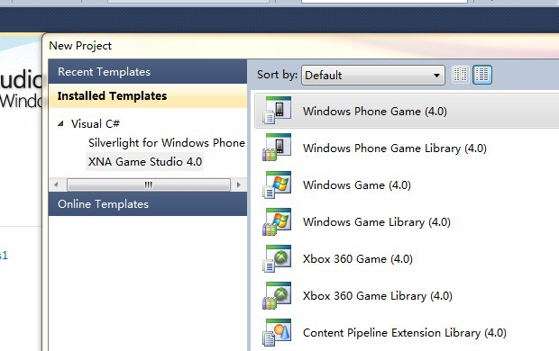
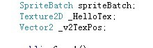
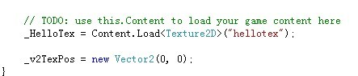
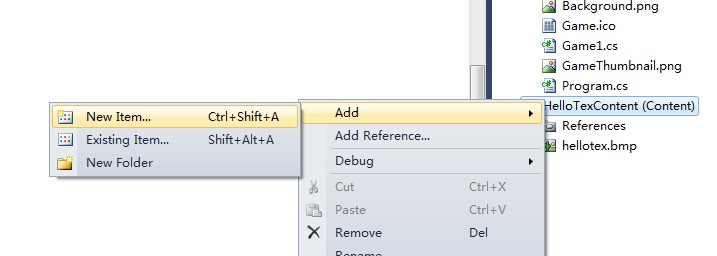
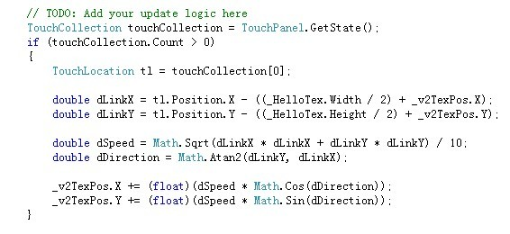
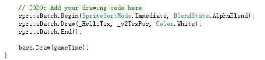
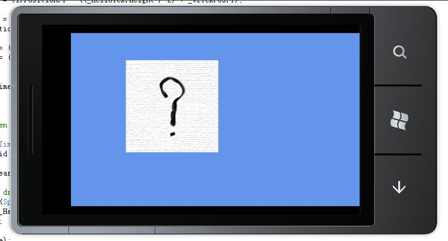

最近几个月一直在关注Windows Phone 7手机系统，很想体验一把WP7的开发。这不最近有钱了，买了个大硬盘，装上了WIN7，终于可以尝试一把了！Let's go！
首先先去微软MSDN官方网站下载整套开发工具，包括了所有开发WP7程序所用到的东西，VS2010 Express Edition for Windows Phone、WP7模拟器、Silverlight 4 SDK、XNA Game Studio 4.0以及Expression Blend 4。成功安装完后，就可以动手了。
先到MSDN上看看入门视频，有中文字幕的哦~~，地址是 http://msdn.microsoft.com/zh-cn/ff728584.aspx 。然后照着他讲的方法来了一遍，当然有些变量名啊数值啊之类的跟他的不一样，按自己习惯走了。
启动VS2010 Express Edition for Windows Phone（当然我已经装了VS2010旗舰版，但是还是这个版本WP7开发功能比较全，所以还是用它了），点击New Project...，然后选择XNA Game Studio 4.0分类下的Windows Phone Game (4.0)模板，如下图：

输入项目名称和解决方案名称，指定一个路径，在这里我的项目名为HelloTex（你好纹理- -!），解决方案名为wp7GamePractices1，最后点击OK。
默认情况下，我们就可以直接为游戏主类（一般被命名为Game1,Game2....GameN）添加自己的内容了。首先添加两个成员变量_HelloTex和_v2TexPos，分别是要显示的2D纹理对象和记录显示位置的2D向量对象（显示位置被定义为纹理左上角在屏幕的位置）：

在LoadContent方法中添加如下内容：

意思是调用Content对象的Load方法加载名为hellotex的图片文件为纹理，并将显示位置设为（0, 0）。这时我们就应该为项目添加文件资源了，右击解决方案资源管理器里的项目文件夹HelloTexContext，选择Add -> Existing Item来添加文件，如下图：

然后在Update方法中添加如下内容：

其过程是：先获得触屏输入状态的信息集合，如果集合数量大于0，也就是有触屏输入，那么就获取触屏的位置，计算纹理中心点位置到触屏位置的向量（使用纹理的宽度/高度除以2再加上纹理显示位置x/y坐标便是纹理中心点的位置了），然后用该向量来定义纹理的移动速度和移动方向，其速度为每帧移动该向量模长的1/10，方向为以该向量y坐标和x坐标比值求反正切所得的角度值。最后用上一次的纹理显示位置的x/y坐标加上移动速度乘以移动方向（角度）的余弦/正弦值，便得到了当前帧的纹理显示位置。
最后在Draw方法中添加如下内容：

意思是开启2D精灵渲染，使用立即显示模式和Alpha混合，在_v2TexPos处绘制_HelloTex纹理，结束2D精灵渲染。
现在我们就可以开启调试了，看看效果如何，如下图：

WP7开发入门体验到此告一段落，以后会有更多精彩内容哦~~~。